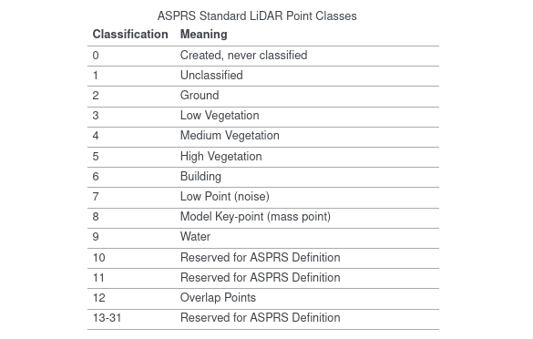
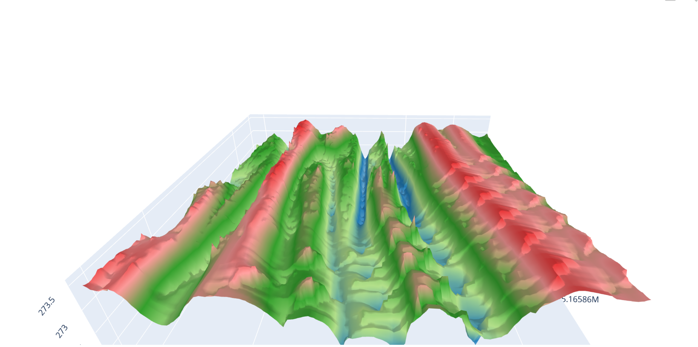

USG3 Module Tutorials¶
The package consists of a number of scripts that carry out different functions
Modules In The package¶
Supported functions include the following:
classification
elevation_data
elevation
visualize
generate
reprojection
Generate¶
- gather_input()¶
This is a script function meant to be run on the command line console It is interactive and enables the user to input various parameters that the function wil use to produce a raster file,shape and geojson file
- Return type
bound,full_path,output_file_laz,output_file_tif,output_file_csv
- get_raster_terrain(bounds, full_path, output_file_laz, output_file_tif, output_file_csv, pipeline)¶
This function generates necessary geospatial data files such as raster files and las files
- Param:bounds
input the bounds of the region
- Param:full_path
input the full path of the region’s ept file this is can be found by runining the gather input function
- Param:output_file_laz
input the location to store the laz file
- Param:output_file_tif
input the location to store the raster image file this
- Param:output_file_csv
input the location to store the geopandas dataframe stored in csv format
- Return type
None
Elevation_data¶
- get_elevation(laz_file, las_file, output_path, crs)¶
This function extracts elevation of given geometrical points given the latitude and the longitude of the given point
- Param:laz_file
The given laz file that contains the detailed geographical data of the location
- Param:las_file
The location to store the converted las file equivalent of the laz file
- Param:output_path
The output path fot the geopandas dataframe generated
- Param:crs
The projection crs you desire to use
- Return type
geoPandasData frame , lasfile dataframe
classification¶
Reprojection¶
This is a class script and hence must be initialized before using it The class requires a geopandas dataframe for initialization.
<instance name>=REPRO(geoapndasfile)
- <instance name>.reprojet():
- Return type
a set reprojection crs for the given geopandas dataframe
visualize¶
This class comprises functions to visualize the data
- visalize_3D(las_file,output_name, **kwargs):
- Param:las_file
the las file from which we get the information
- Output:output_name
the output name for the 3d renderer
- Return type
a 3D plot stored in html format
3D visualization of IO_FULLSTATE¶
- standardize_plot(geo_frame, setcrs, tiff_file, shp_output)¶
- Param:geo_frame
Geodata frame
- Param:setc
set the reprojection of the geopandas dataframe
- Param:tiff_file
path to the raster image file
- Param:shp_output
path to store the correspodning shape file